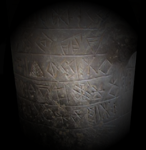

Zypro-Minoisch
Deciphering Cypro-Minoan – Anwendung der digitalen Sequenzanalyse auf das älteste Schriftsystem Europas
Die zypro-minoische Schrift, wohl verwandt mit der berühmten Linear A, wurde von 1700 bis 200 v. Chr. auf Zypern verwendet. Das Gesamtkorpus ist mit ca. 600 Texten, der längste davon mit 342 aufeinanderfolgenden Zeichen, um einiges umfangreicher als der der elamischen Strichschrift, das Syllabar dürfte aber eine ähnliche Zeichenvielfalt haben, also um die 100 verschiedene Zeichen. Die letzten gründlichen Auseinandersetzungen mit der Schrift erfolgen bei Ferrara (2012) und Olivier (2007). Hinderlich für eine Entzifferung sind die von Ferrara ausführlich besprochenen Probleme, dass a) völlig unklar ist, welche Zeichen der verschiedenen Epochen einander jeweils zuzuordnen sind, und b) dass nicht entschieden werden kann, welche Zeichen Haupttypen sind (d.h. eigene lautliche Funktion haben) und welche nur graphische Varianten eines der Haupttypen darstellen. Das Elamicon Webtool wurde genau für diese Problemstellung konzipiert und wird nach einigen Anpassungen dazu geeignet sein, Einblicke in die linguistische Struktur der Texte zu gewähren. Für dei Untersuchung der kypro-minoischen Schrift sind im Vergleich zum oben beschriebenen und bereits teilweise fertiggestellten elamischen Strichschrift-Projekt zwei zusätzliche Schritte notwendig:
- Etliche Schriftstücke müssen autopsiert werden, da nur ungenügende Abbildungen existieren.
- Eine grosse, bisher unbekannte Anzahl kypro-minoische Zeichengruppen sind auf Rollsiegeln enthalten. Der Kontext dieser Zeichengruppen (d.h. ihre archäologische Datierung und das gleichzeitige Auftreten von Herrscherfiguren auf den Rollsiegeln) dürfte wertvolle Hinweise auf die paläografische Entwicklung der Schrift geben und – wenn wir Glück haben – sogar erste Lautwertvorschläge erlauben. Da diese Siegellegenden letztmals 1957 bearbeitet wurden (Masson 1957) und seither auch ausserhalb Zyperns eine grosse Zahl neuer Funde gemacht wurde, ist eine Neuaufarbeitung dieser Artefakte nötig. Spezialisten für die Typologie und Chronologie zypriotischer Rollsiegel sind Alexandra Kull und Michelle Brunner von der Universität Bern, Abt. Vorderasiatische Archäologie.